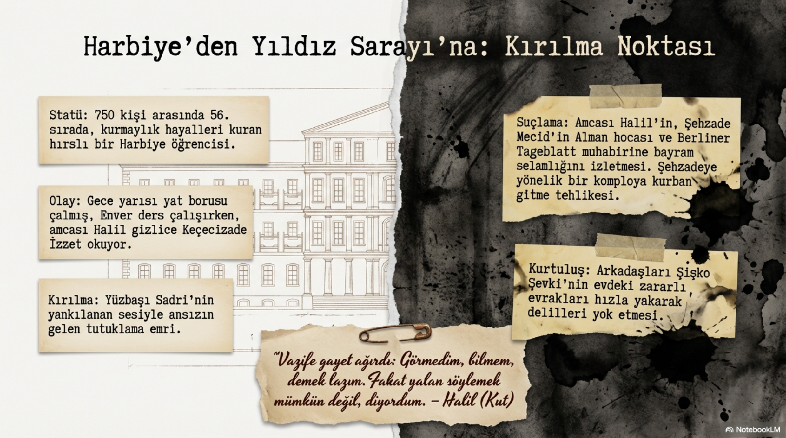
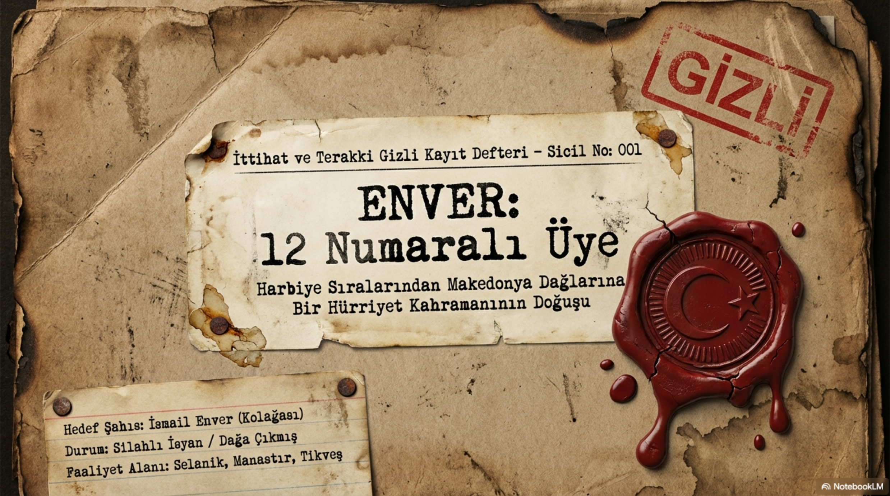
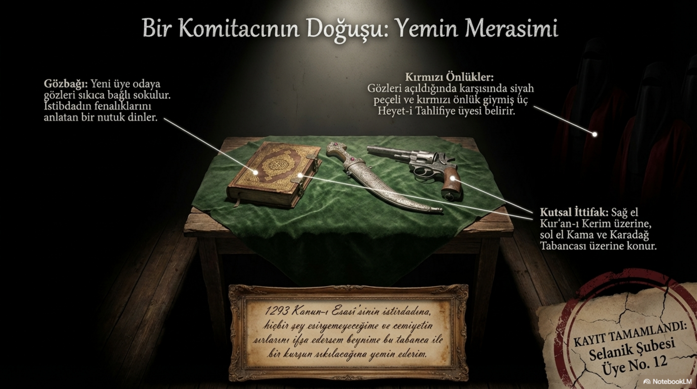
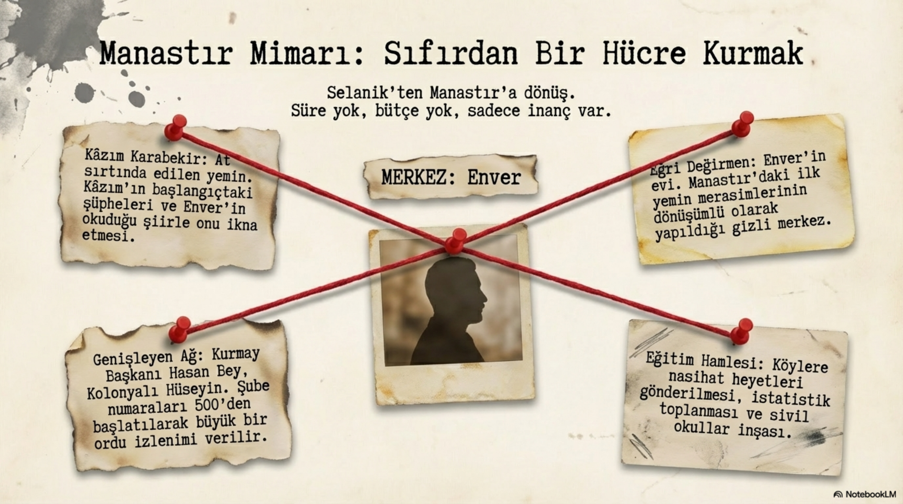
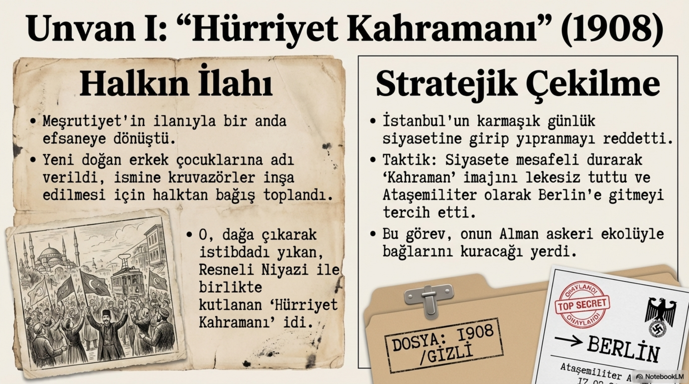
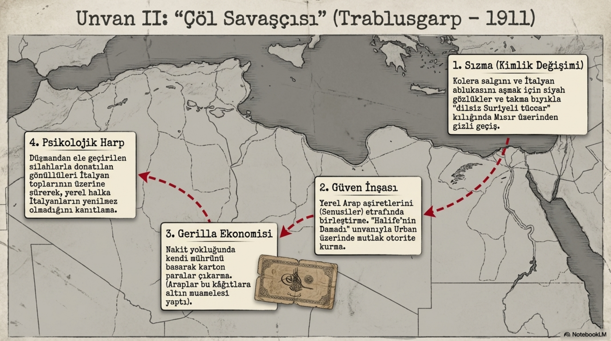
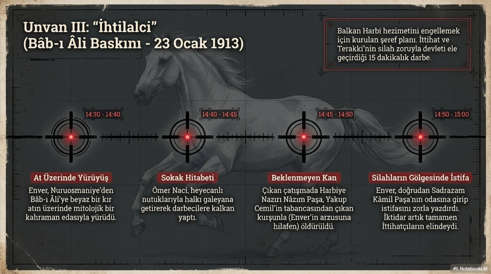
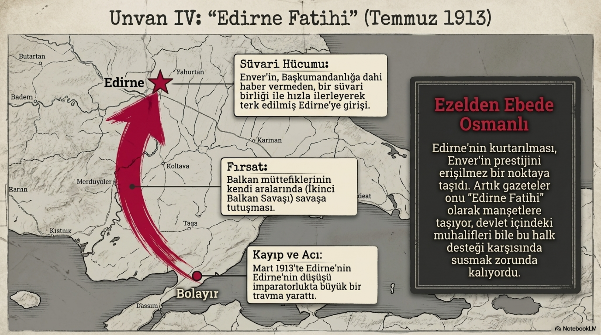
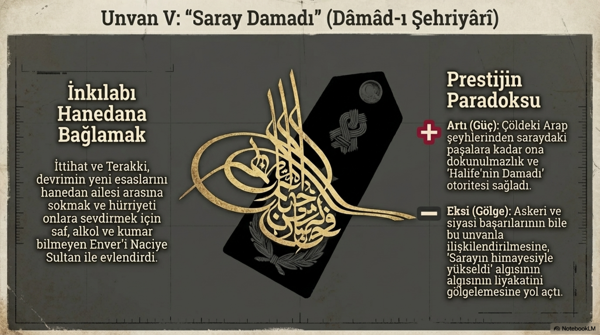

Bölüm 01
Ünvanların Adamı
Enver 1881’de İstanbul’da, zengin olmayan bir ailenin çocuğu olarak dünyaya geldi. Çocukluğunun ilk yılları İstanbul’da geçti; sonra babasının görevi nedeniyle Manastır’a taşındı. Manastır Askerî Rüştiyesi’ne yaşı küçük olmasına rağmen kabul edildi. Bu ayrıntı önemli: Enver’in hayatında erken yaşlardan itibaren bir yetişme, yükselme, öne geçme arzusu vardır. Sınıfın en küçüğüdür ama yaramaz bir çocuk olarak değil, daha çok uslu, çalışkan, kendini ispat etmeye çalışan biri olarak görünür. Onun dünyasında başarı ve sıralama basit okul meselesi değildir; ilerideki büyük hayalin ilk basamaklarıdır.
Manastır Askerî İdadisi ve ardından Harbiye, Enver’in zihnini şekillendiren ana mekânlardır. Askerî okullar o dönemde yalnızca subay yetiştiren kurumlar değildir. Batı’daki teknik gelişmelere, modern askerliğe, devletin çöküşünü durdurma fikrine ve yeni siyasal arayışlara en açık yerlerdir. İttihatçılığın askerî okullarda filizlenmesi boşuna değildir. Çünkü bu gençler hem imparatorluğun yıkılışını hissediyor hem de onu kurtarabilecek bilgi ve disiplinin modern askerlikten geçeceğine inanıyorlardı. Enver de tam bu atmosferin çocuğudur.
Harbiye’de ilk başta istediği sıralamayı alamaması onu rahatsız etti. Kurmay sınıflarının önünden geçerken hissettiği şey yalnızca mesleki heves değildi; büyük işlere layık olma ihtiyacıydı. Yedi yüz elli kişi içinde elli altıncı olmak bile ona yetmiyordu. Çünkü Enver’in karakterinde sıradan başarıyla yetinmeyen bir damar vardı. Bu damar ileride onu dağa çıkaracak, Trablusgarp’a taşıyacak, Edirne’de parlatacak; ama aynı zamanda büyük stratejik kararların eşiğinde tehlikeli bir özgüvene de dönüştürecekti.
Bölüm 02
Yıldız’da Kırılan Genç Subay
Enver’in zihnindeki asıl kırılmalardan biri Yıldız tecridiyle geldi. Amcası Halil ile birlikte bir gece ansızın çağrıldı, sorgulandı, şüpheli muamelesi gördü. Mesele Şehzade Abdülmecid Efendi çevresindeki bir olayla bağlantılıydı; ama Enver için sonuç daha büyüktü. Devletin bir anda insanı suçluya çevirebildiğini, bir öğrenci-subayın hayatını hafiyeler ve şüpheler arasında ezebildiğini gördü. Suçsuz olduğu anlaşılsa da bu tecrübe onda Abdülhamid idaresine karşı derin bir öfke bıraktı.

Burada Enver’in psikolojisini iyi okumak gerekir. O güne kadar genç bir subay olarak vazifesini iyi yaparsa devletin düzeleceğine inanma eğilimi vardı. Fakat Yıldız’da gördüğü muamele, ona meselenin yalnızca kötü memur, bozuk rütbe sistemi veya beceriksiz komutanlarla açıklanamayacağını düşündürdü. Karşısında değiştirilmesi gereken bir rejim vardı. Bu duygu onda romantik bir hürriyet arzusundan daha sert bir şeye dönüştü: Abdülhamid idaresini devirmek.
Bölüm 03
Makedonya Kazanı: Çete, Konsolos, İdam
1902’de kurmay yüzbaşı olarak III. Ordu’ya tayin edildiğinde Enver’in önüne Makedonya gerçeği çıktı. Makedonya o yıllarda kaynayan bir kazandı. Bulgar, Sırp, Rum ve diğer komiteler kendi hedefleri için çete savaşı yürütüyor; büyük devletler bölgeyi sürekli baskı altında tutuyor; Osmanlı idaresi ise hem içeriden hem dışarıdan yıpranıyordu. Enver’in nasibine de bu çetelerle mücadele etmek düştü. 1903’ten itibaren özellikle Bulgar çeteleriyle yoğun çatışmalara girdi. Sadece kendisinin 54 kez silahlı çatışmaya girmesi, bu yılların nasıl bir saha okulu olduğunu gösterir.
Manastır’daki Rostkovski olayı Enver’in zihninde ayrı bir yer tuttu. Rus konsolosunun bir Türk neferine hakaret etmesi ve ardından Er Halim’in konsolosu vurması, Osmanlı yönetimini zor durumda bıraktı. Enver mahkeme sürecinde kâtip olarak yer aldı ve verilen idam kararını haksız buldu. Onun gözünde mesele yalnızca bir askerî disiplin olayı değildi. Müslüman Türklerin hukukunun yeterince korunmadığını, yabancı baskısının devleti nasıl eğip büktüğünü, Osmanlı bürokrasisinin kendi askerini bile feda edebildiğini gördü. Bu olay, Enver’in millî haysiyet duygusunu daha da keskinleştirdi.
Makedonya yılları Enver’e iki şey öğretti. Birincisi, modern kurmaylık sahada harita, kroki, keşif, istihbarat ve disiplin demekti. İkincisi, çete savaşını yalnızca askerî yöntemle bitirmek kolay değildi. Bir çete dağıtılıyor, yenisi çıkıyordu. Büyük devlet müdahalesini çağırmak isteyen komiteler, bölgedeki her karışıklığı diplomatik bir meseleye dönüştürüyordu. Enver bu dünyada hem askerliği öğrendi hem de ihtilalci örgütlerin nasıl çalıştığını yakından gördü.
Bölüm 04
12 Numaralı Üye
1906’da Selanik’e gittiğinde amcası Halil ona gizli bir cemiyetin varlığından söz etti. Hedef belliydi: hakimiyeti millete vermek ve devleti kurtarmak. Enver bu teklifi duyunca tereddüt etmedi. Cemiyete girmek istedi. Burada karşımıza çıkan sahne neredeyse roman gibi ilerler: gece vakti, Kafe Kristal, gizli parola, göz bağı, Talat’la ilk karşılaşma, Kur’an, kama, revolver, siyah peçeler ve kırmızı örtüler. Ama bütün bu sahne dekor değildir; İttihatçılığın psikolojik dünyasını gösterir. Bu genç subaylar yalnızca siyasi bir kulübe girmiyor, hayatlarını bağlayacakları bir yemin düzenine dahil oluyorlardı.

Enver’in Cemiyete girişi, İttihat ve Terakki’nin aradığı askerî profille de örtüşüyordu. O parlak bir kurmay subaydı. Mektepli subay kuşağına aitti. Sahada çete takibi yapmış, harita kullanmış, disiplinli çalışmış, halkı gözlemlemişti. Böyle bir adam, Selanik merkezli gizli yapı için bulunmaz nimetti. Enver artık yalnızca hürriyet fikrine sempati duyan bir subay değildi; Cemiyetin 12 numaralı üyesiydi.
Manastır’a döndüğünde boş durmadı. Hasan Bey, Kâzım Karabekir, Kolonyalı Hüseyin ve diğer isimlerle Manastır şubesini kurmaya girişti. Üye alımı, yemin törenleri, gizli numaralar, öğretmenler ve subaylar üzerinden genişleme, Müslüman köylerinde okul açma düşüncesi... Enver burada yalnızca silahlı mücadele adamı değil, örgüt kurucu olarak da görünür. Özellikle eğitim meselesine verdiği önem dikkat çekicidir. Ona göre halkı ayağa kaldırmanın ve imparatorluğu ayakta tutmanın yolu yalnızca tüfekten değil, okuldan da geçiyordu.


Bölüm 05
Evin Çatısında İki Dünya: Enişte Nâzım Meselesi
Enver’in hayatındaki en ilginç gerilimlerden biri, eniștesi Selanik Merkez Kumandanı Nâzım Bey’le aynı çatı altında yaşamasıdır. Nâzım, Abdülhamid düzeninin adamıdır; Enver ise hürriyetçi gizli örgütün üyesidir. Bir evin içinde iki ayrı dünya durur. Bu durum Cemiyet içinde Enver’e dönük kuşkuları artırır ama Enver pek aldırmaz. Fakat iş kısa sürede kişisel akrabalık sınırını aşar. Cemiyet, Nâzım Bey’i ciddi bir tehdit olarak görür ve ona suikast düzenlenir.
Suikast girişimi tam bir karmaşaya dönüşür. Nâzım ölmez, İsmail Canbulat yanlışlıkla vurulur, ortalık karışır. Enver’in o sıradaki soğukkanlılığı dikkat çekicidir. Bir yandan yaralılarla ilgilenir, doktor arar; diğer yandan asıl kaygısı fedainin yakalanmamasıdır. Burada Enver’in İttihatçı aidiyetinin aile bağının önüne geçtiği görülür. Bu, hareketin nasıl bir sadakat düzeni kurduğunu anlamak için çarpıcıdır. Cemiyet, kişisel ilişkilerin üstünde bir kader ortaklığına dönüşmüştür.
Bölüm 06
Dağa Çıkış: Kurmay Subaydan İsyancıya
1908 yazında baskı iyice arttı. İstanbul’dan gelen telgraflar, tahkikatlar, tutuklamalar ve şüpheler Enver’i bir kararın eşiğine getirdi. Ya İstanbul’a gidecek ve muhtemelen kontrol altına alınacaktı ya da dağa çıkacaktı. Bu kararın ağırlığını anlamak gerekir. Biraz önce kurmay binbaşı olan bir adam, biraz sonra devletin gözünde silahlı isyancıya dönüşecekti. Enver bunu göze aldı. 25-26 Haziran gecesi Selanik’i, ailesini, maddi geleceğini geride bırakarak dağa çıktı.

Dağa çıkan Enver yalnız değildi. Resneli Niyazi, Eyüp Sabri ve diğer isimler de Rumeli’de hareketlenmişti. Fakat Enver’in dağa çıkışı ayrı bir anlam taşıyordu: kurmay subaylar açık isyan sahasına inmişti. Bu, Abdülhamid yönetimi için basit bir eşkıya meselesi değildi. Ordu içinden yetişmiş, eğitimli, itibarlı subaylar artık silahlı biçimde Meşrutiyet talep ediyordu. Enver köyleri dolaştı, yemin törenleri düzenledi, halka Meclis’in yeniden açılması gerektiğini anlattı. Bu süreç 41 gün sürdü ama etkisi yıllara yayıldı.
23 Temmuz 1908’de Meşrutiyet’in ilan edildiği haberi geldiğinde Enver’in sevinci büyüktü. Bu işin büyük bir kan dökülmeden çözülmüş olması onu mutlu etti. Selanik’e döndüğünde artık adı Hürriyet Kahramanı’ydı. İstasyonda onu bekleyen kalabalık, babasının elini öpmesi, Talat’ın ona kırmızı kaplı Kanun-i Esasi vermesi, gözyaşları, sloganlar... Bunlar sadece tören değildir. Osmanlı toplumunun hürriyet için bir yüz aradığı ve o yüzü Enver’de bulduğu anlardır.
Bölüm 07
Şöhretin İlk Tehlikesi
Enver’in şöhreti yalnızca cesaretinden gelmiyordu. İyi bir kurmay subay olarak görülüyor, kişisel ahlakı, çalışkanlığı ve fedakârlığıyla saygı topluyordu. Fakat şöhret tehlikeli bir şeydir. İnsanı bazen büyütür, bazen hızlandırır, bazen de frenlerini zayıflatır. Enver’in hayatında 1908’den sonra görülen şey biraz budur. Hürriyet Kahramanı olmak ona büyük bir prestij kazandırdı. Fakat bu prestij, ilerleyen yıllarda kendisine olduğundan daha büyük tarihî roller biçmesine de zemin hazırladı.
İttihatçılık içinde Enver, askerî kahramanlık ve atılganlık damarını temsil eder. Talat hesap ve koordinasyon adamıdır; Cemal idare ve güvenlik pratiğidir; Enver ise hareket, risk ve zafer arzusudur. Onun olduğu yerde beklemek zordur. Bir cephe varsa gidilir, bir kapı varsa zorlanır, bir fırsat varsa üstüne yürünür. Bu karakter bazen imkânsızı mümkün kılar; bazen de imkânsızı mümkün sanma hatasına sürükler.
Bölüm 08
Trablusgarp: Çölün İçinde İttihatçı Savaş
1911’de İtalya Trablusgarp’a saldırınca Osmanlı hükümeti bölgeye düzenli ve güçlü bir ordu gönderemeyecek durumdaydı. Donanma zayıftı, yollar zordu, diplomasi sıkışmıştı. İşte bu boşlukta İttihatçı subaylar gönüllü olarak cepheye gitmeye başladı. Enver, Mustafa Kemal, Ömer Naci, Yakup Cemil ve başka isimler farklı yollarla Kuzey Afrika’ya ulaştı. Burada savaş klasik cephe düzeninden çok yerel halkla temas, aşiretlerle ilişki, propaganda, gerilla savaşı ve moral mücadelesi şeklinde yürüdü.

Enver’in Trablusgarp’taki rolü ona ikinci büyük kahramanlık katmanını kazandırdı. Derne ve çevresindeki faaliyetleri, yerel direnişle kurduğu ilişki, İtalyanlara karşı yürütülen psikolojik ve askerî mücadele onun imajını büyüttü. Bu savaş, İttihatçıların ileride Teşkilat-ı Mahsusa tarzı yapılara neden yatkın olduğunu da gösterir. Devletin düzenli gücü yetmediğinde, gönüllü subay, yerel müttefik, propaganda ve küçük birlik savaşı devreye girer. Enver bu dünyanın en parlak yüzlerinden biri oldu.
Fakat Trablusgarp aynı zamanda Mustafa Kemal ile Enver arasındaki taktik ve kişisel gerilimlerin de belirginleştiği sahadır. İkisi de cesurdur, ikisi de çalışkandır, ikisi de vatan fikrini ciddiye alır. Ama liderlik anlayışları farklıdır. Enver daha atak, daha imaj kurucu, daha hızlı yükselen bir figürdür. Mustafa Kemal ise daha hesapçı, daha sabırlı ve zaman kollayan bir karakter olarak belirir. Bu fark, Balkan Harbi ve sonrasında daha da görünür hale gelecektir.
Bölüm 09
Babıali ve Edirne: Şöhretin İktidara Dönüşmesi
23 Ocak 1913 Babıali Baskını, Enver’in şöhretini doğrudan iktidar hamlesine bağladı. Balkan Harbi’nin ağır yenilgisi, Edirne’nin kaybı ihtimali ve Kâmil Paşa hükümetine duyulan öfke İttihatçıları darbeye yöneltti. Enver bu baskının en görünen yüzüdür. At üzerinde Babıali’ye yürüyen Hürriyet Kahramanı imgesi, Ömer Naci’nin ateşli hitabetiyle birleşince darbe bir halk hareketi gibi gösterildi. Ama içeride kan aktı, Harbiye Nazırı Nâzım Paşa öldü ve hükümet zorla değiştirildi.

Burada Enver’in hayatındaki dönüşüm çok nettir. 1908’de Meşrutiyet için dağa çıkan subay, 1913’te hükümet değiştiren darbenin sembolüdür. Hürriyet adına başlayan hareket artık iktidarı zorla alma noktasına gelmiştir. Bu yalnızca Enver’in değil, İttihat ve Terakki’nin de dönüşümüdür. Cemiyet, perde arkasından yönlendirme döneminden doğrudan iktidar dönemine geçerken Enver onun kılıcı gibi parladı.
Temmuz 1913’te Edirne’nin geri alınması Enver’in ününü daha da büyüttü. Balkan Harbi’nin utancı içinde Edirne’nin yeniden Osmanlı kontrolüne geçmesi, halka moral verdi. Enver’in şehre önde girmesi onun “Edirne Fatihi” olarak anılmasına yol açtı. Elbette askerî ve diplomatik şartlar bu başarının arkasında çok daha karmaşık bir tablo oluşturuyordu; fakat halk hafızası genellikle karmaşık tabloları değil, sahnedeki yüzleri hatırlar. O yüz de Enver’di.

Bölüm 10
Saray Damadı ve Harbiye Nazırı
Enver’in Naciye Sultan’la evlenerek saray damadı olması, ulaştığı makamların ve kazandığı şöhretin üzerine ayrı bir gölge düşürdü. Bir yanda Abdülhamid düzenine karşı dağa çıkmış Hürriyet Kahramanı vardı; diğer yanda hanedan ailesine bağlanan, sarayla akrabalık kuran yükselen bir iktidar figürü. Bu evlilik ona prestij sağladı ama aynı zamanda “devrimci subay” imajını karmaşık hale getirdi. İttihatçılık bazen tam da böyle çelişkilerle doludur: Saraya karşı yürürsün, sonra sarayın damadı olursun.

1914’te Enver Harbiye Nazırı oldu ve Başkumandan Vekili sıfatıyla Osmanlı ordusunun en kritik karar merkezine yerleşti. Çok genç yaşta çok büyük yetki aldı. Orduyu gençleştirmek, eski kadroları tasfiye etmek, Alman askerî etkisiyle yeni düzen kurmak, seferberlik ve savaş hazırlıklarını yürütmek gibi ağır sorumluluklar onun omuzlarına bindi. Enver’in enerjisi ve iddiası büyüktü; fakat imparatorluğun yükü daha büyüktü.
Bölüm 11
Sarıkamış: Büyük Hayalin Donduğu Yer
Birinci Dünya Harbi’nde Enver adını en ağır şekilde Sarıkamış’la birlikte duyarız. Kafkas Cephesi’nde Ruslara karşı yapılan harekât, zorlu kış şartları, lojistik eksiklikler, yanlış hesaplar ve yüksek hedeflerle birleşince büyük bir felakete dönüştü. Sarıkamış, yalnızca askerî bir yenilgi değildir; Enver’in komutanlık mirasının en ağır dosyasıdır. Onun cesaret, hız ve büyük hedef tutkusu burada insanî bedeli çok yüksek bir sonuç doğurdu.
Enver’i anlamaya çalışırken Sarıkamış’ı yumuşatmak doğru olmaz. Binlerce askerin soğukta, açlıkta, hastalıkta ve çatışmada kaybı, hiçbir kahramanlık cümlesiyle hafifletilemez. Fakat Sarıkamış’ı yalnızca “delilik” diye geçmek de tarih okumayı kolaycılığa indirir. Enver’in zihninde hızlı bir taarruzla Rusları geriye atmak, Kafkasya ve daha geniş Türk-İslam dünyası üzerinde büyük bir etki yaratmak fikri vardı. Sorun şu ki büyük fikir, kötü hesapla birleştiğinde büyük felakete dönüşür.
Bölüm 12
Mustafa Kemal ile Aynı Yolda, Ayrı Akılda
Enver ile Mustafa Kemal arasındaki gerilim, bu dönemin en öğretici başlıklarından biridir. İkisi de aynı askerî okul kültüründen, aynı imparatorluk krizinden, aynı modernleşme ihtiyacından beslenir. İkisi de vatanı kurtarmak ister. Fakat yöntemleri farklıdır. Enver hızlı yükselir, iktidarın merkezine girer, büyük riskler alır. Mustafa Kemal daha sabırlı davranır, merkezin dışında kalır, eleştirilerini içeride tutar, doğru zamanı bekler. Bu fark, ileride tarih sahnesinde çok büyük sonuçlar doğuracaktır.
Çanakkale sürecinde Enver’in Mustafa Kemal’e gönderdiği tebrik mesajı, aralarındaki siyasi gerilime rağmen askerî başarıyı gördüğünü gösterir. Buna rağmen Mustafa Kemal’in terfi süreçlerinde gecikmeler yaşanması ve Enver’in hızlı yükselişi, aradaki mesafeyi büyüttü. Enver, İttihatçılığın muktedir ve atak kanadını; Mustafa Kemal ise içeride eleştiren, mesafe koyan ama örgüt bağını tamamen koparmayan başka bir damarı temsil eder.
Bölüm 13
1918 Sonrası: Sürgün, Türkistan ve Son Hücum
1918’de savaş kaybedilince Enver için İstanbul’da kalmak mümkün değildi. Talat ve Cemal gibi o da ülkeyi terk etti. Bu kaçış, İttihatçı liderliğin yenilgiden sonra hesap verme meselesini de tartışmalı hale getirdi. Enver Berlin’den Moskova’ya, oradan Türkistan hayaline uzanan karmaşık bir yol izledi. Artık Osmanlı ordusunun Harbiye Nazırı değil, yenilmiş bir imparatorluğun büyük ülkülerini başka coğrafyalarda sürdürmeye çalışan sürgün bir komutandı.
Türkistan’da Bolşeviklerle, yerel direnişlerle ve kendi büyük Turan fikriyle iç içe geçen son dönem, Enver’in karakterine şaşırtıcı biçimde uygundur. Yenilgiden sonra köşesine çekilmez. Yine cephe arar, yine tarihî rol arar, yine büyük bir hareketin önünde olmak ister. 4 Ağustos 1922’de bugünkü Tacikistan sınırları içindeki Belcivan yakınlarında çatışmada hayatını kaybetti. Yani Enver’in hayatı bir makam odasında değil, yine bir hücum çizgisinde bitti.
Bölüm 14
Enver İttihatçılığın Hangi Damarını Temsil Eder?
Enver Paşa, İttihatçılığın askerî kahramanlık, hareket, risk ve büyük ülkü damarını temsil eder. Ahmed Rıza fikir ve yayın tarafını, Talat örgüt ve iktidar aklını, Dr. Nâzım yeraltı ve seyyah komiteciliği, Bahaeddin Şakir sert teşkilat zihnini gösteriyorsa, Enver bütün bunların üniforma giymiş, ata binmiş, cepheye koşmuş halidir. Onun hikayesi, İttihatçılığın neden genç subayları büyülediğini de gösterir. Çünkü Enver’de beklemek yoktur; hareket vardır.
Ama işte mesele tam da burada başlar. Hareket tek başına erdem değildir. Cesaret tek başına strateji değildir. Büyük ideal tek başına doğru karar değildir. Enver’in hayatı bize İttihatçılığın büyüleyici gücünü de gösterir, tehlikeli hızını da. Dağa çıkarken hayran bırakan cesaret, Sarıkamış’ta hesap hatasıyla birleştiğinde trajediye dönüşür. Trablusgarp’ta direniş ruhu olan atılganlık, devletin bütün ordusunu yönetirken başka sonuçlar doğurur. Bir adamın kişisel parlaklığı, imparatorluk ölçeğinde her zaman yeterli olmaz.
Bu yüzden Enver’i sevmek ya da sevmemek tek başına hiçbir şeyi açıklamaz. Onu anlamak gerekir. Enver, geç Osmanlı’nın sıkışmış genç subay aklının en parlak ve en tehlikeli örneğidir. Vatanı kurtarmak isterken kendini tarihin merkezine yerleştiren, hızla yükselen, büyük zaferler isteyen, büyük hatalar yapan, yenilgiden sonra bile yeni cephe arayan bir karakterdir. İttihat ve Terakki’nin neden umut verdiğini de neden korkuttuğunu da Enver’in hayatında çıplak gözle görürüz.
Bölüm 15
Kaynakça
Not: Metin yayın diliyle yeniden kurulmuş, doğrudan alıntı yerine anlatı bütünlüğü tercih edilmiştir. Ana kaynak, emeğe saygı için kaynakçada özellikle görünür bırakılmıştır.